Overview
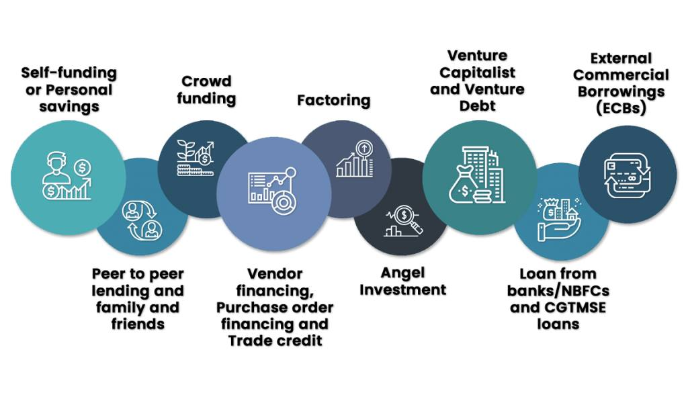
𝗛𝗼𝘄 𝘁𝗼 𝗣𝗹𝗮𝗻 𝗮 𝗕𝘂𝘀𝗶𝗻𝗲𝘀𝘀 𝗜𝗻𝗳𝗿𝗮𝘀𝘁𝗿𝘂𝗰𝘁𝘂𝗿𝗲
A business infrastructure plan creates a road map that is used
to start and run a company. This road map consists of a three
part plan: daily operations, processes, and employees. Each
component of the business infrastructure should be created and
analyzed independently of the others. The plan should act as a
stand-alone resource for the way the business is to grow and
progress well into the future.
𝚃𝚑𝚎 𝙱𝚞𝚜𝚒𝚗𝚎𝚜𝚜 𝚂𝚝𝚛𝚞𝚌𝚝𝚞𝚛𝚎
1. Select a name for the business. Obtain a copyright for the
business name if needed.
2. Decide how your business will be formed. Choose from a sole
proprietorship, partnership, limited liability company (LLC),
corporation, S corporation or non-profit. The requirements and
business documents necessary to start a business vary from
state to state.
3. Complete incorporation forms and submit forms and
fees to the state where the business will be located. The
paperwork and fees required to form the business vary by
state, depending on how your business is formed and titled.
4. Apply for a tax identification number or employee
identification number with the Internal Revenue Service.
5. Apply for a Dunn & Bradstreet number, if your company
will require funding or a line of credit through a financial
institution.
6. Register with your state's department of taxation,
and procure a sales tax license if you will be selling retail
goods.
𝙳𝚎𝚟𝚎𝚕𝚘𝚙𝚒𝚗𝚐 𝚊 𝙱𝚞𝚜𝚒𝚗𝚎𝚜𝚜 𝙿𝚕𝚊𝚗
1. Research possible competitors in your area. Obtain an
overview of the market and demographics in comparison to your
business model, as well as a comparison of products and
pricing. To get this information, use tools such as your local
library, the Internet, and by interviewing like-minded
business owners.
2. Write a mission statement, outlining business goals
and growth expectations. Outline what your new business will
do, what you might need to start a new enterprise, and what
your business will bring to the community.
3. Define the type of operating environment the business
will need during the initial growth phase. Determine whether
you will lease office space, purchase existing real estate, or
begin construction on a new building.
𝙱𝚞𝚍𝚐𝚎𝚝 𝚊𝚗𝚍 𝙵𝚒𝚗𝚊𝚗𝚌𝚎
1. Create a budget for your business. The budget should
include start-up costs, salaries, operating costs and
marketing costs. Detail the capital needed to survive the
first year, progressing through the next five years from
startup.
2. Define what financial assistance is needed to
start the enterprise, as well as where the financing will come
from.
3. Calculate labor costs by determining salaries or
hourly rates for each position. Decide whether the worker in
the position needs to be a full-time or part-time employee, a
temporary hire, or a contractor.
𝙼𝚊𝚗𝚊𝚐𝚎𝚖𝚎𝚗𝚝
1. Create an organizational chart for the business,
detailing the positions needed to start the business, ranging
from CEO and management to general staff and hourly employees.
2. Create a job description for each position. Outline
specific duties, as well as who each position may report to.
Rank each position based upon need and budget.
3. Create a projected growth list. Include future
employees needed and materials or tools you might need as the
company expands. Prioritize these items based upon need and
budget.
**The Importance of Finance to the Startup -
https://synfiny.com/importance-finance-startup/
If this universe have the existence of better intelligent life
other than humans then we could have been found by them. Or,
we are the ones, towards the betterment of our existence.
Question is, how and what to follow/do for the betterment or
advancement?
If we consider our intelligence to develop generations with
more psychologically, socially and spiritually active beings,
then the definition of betterment can be considered valid.
Imagination exists in time to build the future and hope. The
only bad thing within good is that how you define bad.
Consider good without limits, little bad is good.
Somehow, science has achieved its path towards perfection, now
if 'Man' is made, the instinct of intelligence should be
diverted towards multi-planetary or in search of stones, and
no harm for the land and lives. Your betterment, like GDP,
where the currency is the happiness. And happiness comes from
a specific perception. #perception #betterment #future #hope
16 ideas to lead a healthier homegrown company culture Taking
a creative approach to maintaining personable business
relationships is just as important.
1. RECOGNIZE AND REWARD ACTIONABLE VALUES.
2. SHARE YOUR OUTSIDE INTERESTS AT WORK. 3. DESIGN KPIS
THAT CONVEY SENIOR LEADERSHIP EXPECTATIONS.
4. PAIR UNLIKELY TEAMS TOGETHER FOR GROUP COLLABORATIONS.
5. GIVE EMPLOYEES AUTHORITY TO MAKE IMPACTFUL DECISIONS.
6. ENCOURAGE NEW IDEAS TO PLAN GROUP OUTINGS.
7. ENABLE EMPLOYEES TO INSTILL THE CHANGE THEY WANT TO SEE.
8. MODEL YOUR BEHAVIOR AND VALUES WITH THE COMPANY.
9. EMPOWER INDIVIDUALIZED BRILLIANCE.
10. LOWER THE BARRIERS BETWEEN EXECUTIVE LEADERSHIP AND DIRECT
REPORTS.
11. BUILD EACH OTHER UP.
12. TIE CULTURE-BUILDING INTO DEI EFFORTS.
13. PROMOTE THE ENTREPRENEURIAL MINDSET.
14. BEGIN WITH THE END AND WORK BACKWARDS.
15. HOLD EACH OTHER ACCOUNTABLE.
16. START A COMMITTEE.
https://www.fastcompany.com/90751869/16-ideas-to-lead-a-healthier-homegrown-company-culture
#companyculture #entrepreneurship #HealthyHabits #community
How to Find and Groom Your Successor
One of the responsibilities that can be difficult, even for
great CEOs, is to make the time to consider their successor
plan. While it's human nature not to think too far into the
future, you owe it to your organization to groom prime talent
to replace you, regardless of how invincible you still feel.
Think of it as a contingency plan.
Great organizations build successor plans deep into their
organization as well. The idea is that if a lower-level
manager wants a promotion, they'd better have someone ready to
take over for them.
But, for this article, let's focus on what it means to put a
successor plan in place for the top job: the CEO.
𝟭. 𝗜𝗱𝗲𝗻𝘁𝗶𝗳𝘆 𝗙𝘂𝘁𝘂𝗿𝗲 𝗟𝗲𝗮𝗱𝗲𝗿𝘀
In every organization, you have high-potential A-caliber
players who are eminently promotable. These are people who
check many boxes when it comes to attributes like intellectual
capability, expertise, and ambition. These are the kinds of
people you want to consider taking part in your successor
plan. Nothing against solid B-players, but you're looking for
your superstars when it comes to identifying the next
potential CEO.
As you do your assessments, don't overlook how important it is
that someone truly has the ambition to grab the top job
someday. For instance, I remember early in my career, when I
thought all my colleagues wanted to run the business, as I did
eventually. But that wasn't true. Most people want to do their
job and get a raise or promotion occasionally. They don't want
the stress or responsibility of running the business. Many
people might say they want the top job, but the percentage of
people ready to do hard work and make sacrifices to get there
is relatively small.
𝟮. 𝗣𝗼𝘀𝗶𝘁𝗶𝗼𝗻𝗶𝗻𝗴 𝗧𝗮𝗹𝗲𝗻𝘁
How you structure the talent in your organization is an
essential aspect of building your successor plan. Ideally, it
would be best to have your high-potential leaders reporting
directly to the CEO--which serves as a development platform
for them. As CEO, you might have eight VPs reporting to you,
for instance. That means you have eight slots available for
future leadership candidates.
The catch is that a CEO can find themselves with direct
reports who are fully capable lieutenants but lack one or more
of the qualities that would make them a CEO successor
candidate. While they might add value to the organization in
their role, they also become blockers to the successor
candidates beneath them.
This might force you to change your organizational structure,
ranging from adding a new position that reports to the CEO or
even replacing a B-player with an A-player on your successor
list.
𝟯. 𝗗𝗲𝘃𝗲𝗹𝗼𝗽𝗶𝗻𝗴 𝗬𝗼𝘂𝗿 𝗔-𝗣𝗹𝗮𝘆𝗲𝗿𝘀
I've written before about how to develop A-players. It becomes
an integral part of the CEO's job to put potential successors
in place and give them the kinds of opportunities they need to
grow the skills they'll need if they become CEO. Here are a
few strategies to consider putting in place:
Education. Many times, the limitation of an A-player is that
they're strong in one area of the business--like finance or
engineering--but lack exposure to other functional areas like
operations. Look for ways to give your potential successors
opportunities to gain a more holistic understanding and
exposure to running the overall business. Cross-functional
teams. Look for opportunities for your high-potential players
to lead cross-functional teams involved with challenging
projects, like implementing an ERP system or integrating a new
acquisition, that present opportunities to learn about aspects
of the business they have yet to be exposed to. Peer groups.
Another excellent growth opportunity for future CEO candidates
is to join a peer group specifically focused on successor
development. These groups will typically involve CEOs and
their successors, which creates excellent learning
opportunities for your successor to learn from other CEOs as
they seek to develop well-rounded and robust leadership
skills. (Full disclosure: We run peer groups focused on this
topic at the Inc. CEO Project.)
𝟰. 𝗧𝗶𝗺𝗲 𝘁𝗼 𝗘𝘅𝗶𝘁
At some point in your successor development plan journey, you
need to make perhaps your most difficult decision: to step
down. Otherwise, you risk becoming the blocker yourself to the
high-potential leaders you have developed. But even then,
there is a risk to the organization when you choose the person
to succeed you. We need only to look at one of the most
high-profile successor plans of all time, when Jack Welch
stepped aside at GE, to see what might unfold. It was long
known that Welch had three candidates on his successor list.
And when he finally decided to name his replacement, the other
two immediately left the company to take CEO jobs elsewhere.
As you go about constructing your successor plans, consider
both the upside that comes with developing future leaders as
well as the potential costs if you find long-term growth
opportunities for all your A-players.
https://www.inc.com/jim-schleckser/how-to-find-groom-your-successor.html
#FutureLeaders #Talent
𝚂𝚘𝚏𝚝𝚠𝚊𝚛𝚎 𝚊𝚜 𝚊 𝚜𝚎𝚛𝚟𝚒𝚌𝚎 𝚑𝚊𝚜 𝚊 𝚋𝚛𝚊𝚗𝚍𝚒𝚗𝚐 𝚙𝚛𝚘𝚋𝚕𝚎𝚖
In the B2B space especially, almost every provider is
switching to a software as a service (SaaS) model, making
competition tough and permanent. Kier Humphreys, experience
director at Hallam, argues that SaaS companies need to go back
to basics to stand out: develop a clear narrative of
differentiation.
Software as a Service (Saas) needs to deliver two things:
software and service. It’s easy to think of this as a
capital-light way to access tooling, but as every provider
moves to a SaaS model, the fight for share-of-wallet has moved
from an annual beauty parade to an always-on-consideration.
Procurement decisions have added a dialled-up layer of emotion
with service now front and center. If there’s one thing that
can positively impact our emotions, it’s effective brand
execution (something that 82% of B2B marketers agree they need
to be more focused on).
- 𝗜𝘁’𝘀 𝗮𝗹𝗹 𝗮𝗯𝗼𝘂𝘁 𝗻𝗮𝗿𝗿𝗮𝘁𝗶𝘃𝗲
Brand investment isn’t new or magical: Tesco’s Finest range
isn’t objectively better than its standard in-house range, but
you sure feel fancy buying and consuming it. The level of
experience vastly increases the perception of value and
quality.
You aren’t the only SaaS offering in your industry. Chances
are, your pricing and feature set are comparable to the
competition’s. What separates you is the narrative you build
around your brand and your ability to demonstrate the features
you offer and the life-changing productivity, efficiency and
life hacks your model delivers.
What can you do to make sure your SaaS marketing stands out?
Simple: truly impactful experiences, from the first second
someone reaches your platform. Ensure first impressions stand
the test of pricing, onboarding and contracts. Stand apart
with cohesive and distinctive brand development and creative
execution.
The total experience is what drives churn reduction, LTV and
growth. It’s B2B, but you’re still dealing with humans. Brand
doesn’t stop with the first impression; it’s perception, which
exists in each micro-interaction from day one onward.
- 𝗧𝗵𝗲 𝗯𝗿𝗮𝗻𝗱 𝗲𝗰𝗵𝗼 𝗰𝗵𝗮𝗺𝗯𝗲𝗿
It’s easy to get caught in an echo chamber when thinking about
brand. You can waste hours considering the exact language for
a brand vision document, but copy for a website will be
written in minutes. Worse still, hours can be spent on how
many times the phrase ‘digital transformation’ can be peppered
throughout your homepage copy.
Brand has become a way to make your service more complex
through language, rather than a perception built on promise
and delivery. While it’s good that 50% of marketing budgets
are allocated to branding in the most mature B2B brands, that
often still focuses on the superficial.
Peep Laja (a hero in the conversion rate optimization space
and founder of the message testing platform Wynter) recently
posted on LinkedIn: “Your company home page is not where you
should tell your narrative.” This should be printed out and
stuck to the wall of every brand.
When we talk about dialling up your brand, it doesn‘t mean
beating people around the head with the journey your founder
took from humble goat farmer to hustling rockstar in the SaaS
space. These narratives very quickly sound the same. Buyers
(humans) don‘t operate in a vacuum. They don‘t view their
interaction with you as epics to rival Lawrence of Arabia,
ending up on your team page and marvelling at the collective
genius that makes transformation simple through technology.
- 𝗪𝗵𝗮𝘁 𝗿𝗲𝗮𝗹 𝗱𝗶𝗳𝗳𝗲𝗿𝗲𝗻𝘁𝗶𝗮𝘁𝗶𝗼𝗻 𝗹𝗼𝗼𝗸𝘀 𝗹𝗶𝗸𝗲
Every SaaS brand exists in a competitive marketplace, and
every brand wants to stand out. It‘s easier to sell the idea
of standing out by looking and sounding different. But what if
you stand out by setting up a market-orientated solution and
ensuring every touchpoint meets or exceeds buyers’
expectations?
Successful brands do the thing they said they would. If you
aren‘t doing that, that beautiful font and pattern are as
useful as Elon Musk‘s humility coach.
Where should this brand reset begin? Start small. Talk to your
prospects. Have new employees review the competitive
landscape. See how those most important to you perceive the
brand you‘ve created. Talk to new and long-term customers and
see if there’s any cohesion between initial promise and the
reality of existing within your ecosystem. Improve both, and
never stop.
Investing in your brand is more than just improving the look
of your site and saturating the colors in your palette to
deliver distinction. It‘s about providing a reality as close
as possible to the perception you work so hard to project at
the beginning of the association. Think of it as a new
relationship: if the first date is you at your best, and every
date after that slowly reveals the gremlin inside of you...
you get the picture.
Constantly focus on your brand, and fixate on ensuring every
touchpoint a customer or prospect reaches is as good as, if
not better than, the first. Start with research; objectively
audit your brand experience and focus on the areas causing
customers and prospects the most pain. That, versus a new
brand execution built on nothing but a desire for change, is
the way to achieve sustainable growth.
#SaaS #service #software #brand #competition #differentiation
#sustainablegrowth
𝗙𝗿𝗼𝗺 𝗔𝗚𝗠𝘀 𝗧𝗼 𝗠&𝗔𝘀: 𝟭𝟬 𝗟𝗮𝗻𝗱𝗺𝗮𝗿𝗸𝘀 𝗢𝗳 𝗖𝗼𝗿𝗽𝗼𝗿𝗮𝘁𝗲 𝗟𝗶𝗳𝗲
Even the largest businesses have their roots in relatively
humble beginnings. Amazon started off as an online bookstore,
Tesco began life as a market stall, and KFC initially sold
fried chicken from a single service station café in Kentucky.
Whatever their origins and no matter their scale, companies
are required to deal with a number of events and obligations
as they carve out a corporate path: from attracting the
requisite funding, to dealing with the advances of a predatory
rival.
Here are 10 corporate signposts each of which can have an
impact on the portfolios of stocks and shares investors.
𝟭 – 𝗜𝗻𝗶𝘁𝗶𝗮𝗹 𝗣𝘂𝗯𝗹𝗶𝗰 𝗢𝗳𝗳𝗲𝗿𝗶𝗻𝗴
An initial public offering (IPO) is one way a company can ‘go
public’ for the first time. This is when a company issues
shares to the public in its bid to join the stock market.
A company carrying out an IPOs is also referred to as
‘floating’ on the stock market. UK flotations in the 1980s
included the likes of BT, British Gas and British Airways.
From a company’s perspective, an IPO offers a way to raise
money by selling shares in its business to willing investors.
The number of shares issued, plus the price for which they
sell, determines a company’s market capitalisation or ‘market
cap’.
When undertaking an IPO, a company appoints advisers, most
notably, an investment bank, which underwrites the deal. In
other words, it offers guarantees about the number of shares
being sold, taking up the slack if any remain unsold at the
time of flotation.
Investment banks also look for would-be investors, set the
offer price of the shares, and oversee the share sale.
𝟮 – 𝗥𝗲𝘃𝗲𝗿𝘀𝗲 𝘁𝗮𝗸𝗲𝗼𝘃𝗲𝗿
Also known as a ‘reverse merger’ or a ‘reverse IPO’, a reverse
takeover allows a private company to be listed on the market
without having to organise and pay for an IPO.
Reverse takeovers occur when a private firm takes over a
public firm where the latter is often a ‘shell’ corporation,
in other words, an inactive entity or one with few assets. The
private company ends up becoming publicly listed through the
shell corporation.
3 – Company report & accounts
Company report & accounts are a summary of a business’s
financial activity over a 12-month period. In the UK, they are
prepared for Companies House and HM Revenue & Customs every
year and consist of items such as the ‘balance sheet’, ‘profit
and loss statement’ and ‘cash flow statement’.
Each element provides an insight to shareholders and investors
about how an organisation is performing. The larger the
business, characterised by sub-companies, multiple divisions
and various brands, the more complicated a company’s report
and accounts will be.
· Balance sheet: a snapshot of a business’s assets,
liabilities and shareholder equity at a specific point in time
· Profit and loss statement: different to the above because it
records performance over a period of time. Provides
information on a company’s revenues and expenses throughout
its financial year
· Cash flow statement: explains cash movements in and out of a
business over the course of its financial year
· Directors’ report: a summary of a company’s trading
activities plus a discussion about future prospects.
Company accounts, prepared by auditors, must adhere to
generally accepted accounting practices.
𝟰 – 𝗔𝗻𝗻𝘂𝗮𝗹 𝗚𝗲𝗻𝗲𝗿𝗮𝗹 𝗠𝗲𝗲𝘁𝗶𝗻𝗴
An annual general meeting (AGM), is a yearly gathering of a
company’s shareholders and its board of directors. This tends
to be the only time that the directors and shareholders meet
and is a chance for the directors to present the company’s
annual report (see above).
During an AGM, a company’s performance is analysed and its
strategy discussed. Shareholders can ask questions of the
board, vote on company decisions and fill in any vacant
positions on the board.
𝟱 – 𝗠𝗲𝗿𝗴𝗲𝗿𝘀 & 𝗔𝗰𝗾𝘂𝗶𝘀𝗶𝘁𝗶𝗼𝗻𝘀
Mergers and acquisitions (M&As) turn two companies into a
single entity. Reasons for an M&A include teaming up with a
rival, acquiring new assets, streamlining costs and
encouraging innovation.
Whether the transaction is deemed a ‘merger’ or an
‘acquisition’ depends on factors including the deal structure,
the size of the companies concerned and the markets that are
affected.
M&As are categorised by type:
-- horizontal (for example, the merger of two competitors)
-- vertical (where two different sorts of business combine to
make stronger individual entity) and
-- conglomerate
(two unrelated companies combine but remain separate).
M&As are also categorised by form:
-- statutory
-- subsidiary
-- consolidation.
Mergers involve the combination of two equal companies
resulting in a new entity under one name. Acquisitions tend to
involve a smaller company being bought up by a larger one.
Depending on how an acquisition is structured, the smaller
company might maintain its existing name and status or be
absorbed into the acquiring company.
Mergers are voted on by boards of both companies and often
require shareholder approval. Acquisitions may take place
through more aggressive methods carried out by the acquiring
company. Some acquisitions are described as ‘hostile
takeovers’, where the acquisition of one company by another
has taken place against the wishes of the former.
Depending on how it is viewed, an M&A can have a profound
effect on a company’s share price. Shares in both companies
may rise or fall depending on public opinion of the deal.
The conduct of takeovers and mergers of UK public companies is
regulated by the City Code on Takeovers and Mergers, usually
shortened to the ‘City Code’.
𝟲 – 𝗠𝗮𝗻𝗮𝗴𝗲𝗺𝗲𝗻𝘁 𝗯𝘂𝘆𝗼𝘂𝘁/𝗯𝘂𝘆𝗶𝗻
A management buyout (MBO) involves a management combining
resources to acquire all or part of the company. The idea is
the management team takes full control and ownership of the
business with a view to using their expertise to grow the
organisation.
In considering an MBO, a number of considerations need to be
applied, such as the desire and credibility of the management
team putting in the bid, the availability of funding and
whether all parties can agree upon the funding mix.
The hallmarks of a business that would facilitate a successful
MBO are:
-- company with a track record of profitability
-- good prospects
-- strong and committed management team with a mix of
skills
-- vendor willing to consider sale to management
-- deal structure that can be funded and supported by future
cash flows
Management buyins, or MBIs, are similar to MBOs but involve a
management team from outside a company coming in to take
control and ownership of an organisation. MBIs usually require
external funding from banks or private equity investors.
𝟳 – 𝗥𝗶𝗴𝗵𝘁𝘀 𝗶𝘀𝘀𝘂𝗲𝘀
A rights issue is a way for a quoted company to raise money.
Instead of taking on debt, a business asks its existing
shareholders to put their hands in their pockets to provide
extra cash.
As part of a rights issue, a company gives its existing
shareholders the right to subscribe to additional shares.
Shareholders are not obliged to participate in a rights issue.
A 1-for-5 rights issue means an existing shareholder can buy
one extra share for every five that are held. Every
shareholder is offered the same deal, no matter how many
shares they hold overall.
𝟴 – 𝗦𝘁𝗼𝗰𝗸 𝘀𝗽𝗹𝗶𝘁
A stock split takes place when a company issues existing
investors with additional shares for each stock that they
already own. Each investor’s existing shareholding is ‘split’
into a larger number of shares, even though their overall
holding in the company remains the same as before the split.
Companies split their shares to make each share in the
business cheaper. In theory, this encourages more investment
as the shares become more affordable.
A company might decide it needs to act because its share price
has become too high either making it overbought (trading at a
price above its intrinsic value), or expensive compared with
other companies in the same industrial sector.
The most popular split ratio is 2-for-1 or 3-for-1. In these
examples, a shareholder who owned one company share before the
split, would end up with either two or three afterwards,
respectively.
Earlier this month, the corporate giant Amazon executed a
20-for-1 stock split.
𝟵 – 𝗧𝗮𝗸𝗲 𝗽𝗿𝗶𝘃𝗮𝘁𝗲
There are several reasons why listed companies are taken
private.
Businesses often find it easier to restructure away from the
rigours of being stock market-listed. Tough decisions on
strategy, job cuts or governance do not have to be put to
shareholders, nor is a private company required to report
results every quarter.
Valuing private companies is much harder because there’s often
a lack of information with regards to sales, profits and how a
business’s products and services are performing.
When a business is taken private, the most obvious benefit to
shareholders is that prospective buyers usually offer a price
that’s above the company’s existing share price. According to
the online broker AJ Bell, the average premium paid in both
2020 and 2021 for UK stocks was 37%, representing a healthy
return for existing shareholders.
Once a company is taken private, it’s removed from the buying
radar of retail investors – the likes of you and me. However,
it’s not uncommon for a struggling company to be taken
private, its problems fixed (with an injection of capital, for
example) and then sold back into public ownership.
A ‘take private’ transaction might involve either one, or
more, private equity firms acquiring the stock of a publicly
traded corporation. Private equity is an alternative means of
finance – distinct from taking out a loan, issuing stock or
selling bonds – for a business that’s looking to raise
capital.
Earlier this year, the Daily Mail’s owner, Daily Mail and
General Trust (DMGT) exited the London market ending a 90-year
history as a public company. DMGT was officially delisted from
the London Stock Exchange following a successful privatisation
by the Rothermere family.
𝟭𝟬 – 𝗦𝗽𝗲𝗰𝗶𝗮𝗹 𝗣𝘂𝗿𝗽𝗼𝘀𝗲 𝗔𝗰𝗾𝘂𝗶𝘀𝗶𝘁𝗶𝗼𝗻 𝗖𝗼𝗺𝗽𝗮𝗻𝗶𝗲𝘀
A Special Purpose Acquisition Company (SPAC) is a way of
raising finance for a specific purpose, such as the
acquisition of a third-party company.
SPACs are cash shells with no commercial operations or
investments. They raise money from investors and list on a
stock exchange before using those funds to buy a private
business to take it public.
In the US in particular, SPACs – backed by movie stars, sports
celebrities and politicians – have soared in popularity in
recent years, with 248 companies going public in 2020 before
being joined by another 630 in 2021.
Last year, after bowing to a clamour of pleas from
entrepreneurs and investors keen to jump on the global SPACs
bandwagon, the Financial Conduct Authority, the UK’s financial
regulator, changed its rules to facilitate SPAC listings on
the London stock market.
Despite several changes to the listing rules, UK regulations
are regarded as more stringent compared with the US and other
markets around the world. A concern remains about whether the
existing framework is one that’s sufficiently flexible enough
to allow SPACs to thrive domestically.
In the UK, a SPAC must raise at least £100 million in gross
cash from public shareholders at the date of listing. ‘Public
shareholders’ excludes directors, founders or anyone promoting
the SPAC.
𝗗𝗲𝘀𝗶𝗴𝗻 𝗬𝗼𝘂𝗿 𝗢𝗿𝗴𝗮𝗻𝗶𝘇𝗮𝘁𝗶𝗼𝗻 𝘁𝗼 𝗠𝗮𝘁𝗰𝗵 𝗬𝗼𝘂𝗿 𝗦𝘁𝗿𝗮𝘁𝗲𝗴𝘆
𝘈𝘯 𝘰𝘳𝘨𝘢𝘯𝘪𝘻𝘢𝘵𝘪𝘰𝘯 𝘪𝘴 𝘯𝘰𝘵𝘩𝘪𝘯𝘨 𝘮𝘰𝘳𝘦 𝘵𝘩𝘢𝘯 𝘢 𝘭𝘪𝘷𝘪𝘯𝘨 𝘦𝘮𝘣𝘰𝘥𝘪𝘮𝘦𝘯𝘵 𝘰𝘧 𝘢
𝘴𝘵𝘳𝘢𝘵𝘦𝘨𝘺. 𝘛𝘩𝘢𝘵 𝘮𝘦𝘢𝘯𝘴 𝘪𝘵𝘴 “𝘰𝘳𝘨𝘢𝘯𝘪𝘻𝘢𝘵𝘪𝘰𝘯𝘢𝘭 𝘩𝘢𝘳𝘥𝘸𝘢𝘳𝘦” (𝘪.𝘦.,
𝘴𝘵𝘳𝘶𝘤𝘵𝘶𝘳𝘦𝘴, 𝘱𝘳𝘰𝘤𝘦𝘴𝘴𝘦𝘴, 𝘵𝘦𝘤𝘩𝘯𝘰𝘭𝘰𝘨𝘪𝘦𝘴, 𝘢𝘯𝘥 𝘨𝘰𝘷𝘦𝘳𝘯𝘢𝘯𝘤𝘦) 𝘢𝘯𝘥 𝘪𝘵𝘴
“𝘰𝘳𝘨𝘢𝘯𝘪𝘻𝘢𝘵𝘪𝘰𝘯𝘢𝘭 𝘴𝘰𝘧𝘵𝘸𝘢𝘳𝘦” (𝘪.𝘦., 𝘷𝘢𝘭𝘶𝘦𝘴, 𝘯𝘰𝘳𝘮𝘴, 𝘤𝘶𝘭𝘵𝘶𝘳𝘦,
𝘭𝘦𝘢𝘥𝘦𝘳𝘴𝘩𝘪𝘱, 𝘢𝘯𝘥 𝘦𝘮𝘱𝘭𝘰𝘺𝘦𝘦 𝘴𝘬𝘪𝘭𝘭𝘴 𝘢𝘯𝘥 𝘢𝘴𝘱𝘪𝘳𝘢𝘵𝘪𝘰𝘯𝘴) 𝘮𝘶𝘴𝘵 𝘣𝘦
𝘥𝘦𝘴𝘪𝘨𝘯𝘦𝘥 𝘦𝘹𝘤𝘭𝘶𝘴𝘪𝘷𝘦𝘭𝘺 𝘪𝘯 𝘵𝘩𝘦 𝘴𝘦𝘳𝘷𝘪𝘤𝘦 𝘰𝘧 𝘢 𝘴𝘱𝘦𝘤𝘪𝘧𝘪𝘤 𝘴𝘵𝘳𝘢𝘵𝘦𝘨𝘺.
𝘙𝘦𝘴𝘦𝘢𝘳𝘤𝘩 𝘴𝘶𝘨𝘨𝘦𝘴𝘵𝘴 𝘵𝘩𝘢𝘵 𝘰𝘯𝘭𝘺 10% 𝘰𝘧 𝘰𝘳𝘨𝘢𝘯𝘪𝘻𝘢𝘵𝘪𝘰𝘯𝘴 𝘢𝘳𝘦
𝘴𝘶𝘤𝘤𝘦𝘴𝘴𝘧𝘶𝘭 𝘢𝘵 𝘢𝘭𝘪𝘨𝘯𝘪𝘯𝘨 𝘵𝘩𝘦𝘪𝘳 𝘴𝘵𝘳𝘢𝘵𝘦𝘨𝘺 𝘸𝘪𝘵𝘩 𝘵𝘩𝘦𝘪𝘳 𝘰𝘳𝘨𝘢𝘯𝘪𝘻𝘢𝘵𝘪𝘰𝘯
𝘥𝘦𝘴𝘪𝘨𝘯. 𝘚𝘰𝘮𝘦 𝘰𝘧 𝘵𝘩𝘦 𝘱𝘳𝘰𝘣𝘭𝘦𝘮 𝘪𝘴 𝘢 𝘨𝘳𝘰𝘴𝘴 𝘮𝘪𝘴𝘶𝘯𝘥𝘦𝘳𝘴𝘵𝘢𝘯𝘥𝘪𝘯𝘨 𝘰𝘧
𝘸𝘩𝘢𝘵 𝘵𝘩𝘦 𝘸𝘰𝘳𝘥 “𝘢𝘭𝘪𝘨𝘯𝘮𝘦𝘯𝘵” 𝘢𝘤𝘵𝘶𝘢𝘭𝘭𝘺 𝘮𝘦𝘢𝘯𝘴 𝘪𝘯 𝘵𝘩𝘪𝘴 𝘤𝘰𝘯𝘵𝘦𝘹𝘵. 𝘞𝘩𝘦𝘯
𝘪𝘵 𝘤𝘰𝘮𝘦𝘴 𝘵𝘰 𝘦𝘹𝘦𝘤𝘶𝘵𝘪𝘯𝘨 𝘴𝘵𝘳𝘢𝘵𝘦𝘨𝘺, 𝘢𝘭𝘪𝘨𝘯𝘮𝘦𝘯𝘵 𝘮𝘦𝘢𝘯𝘴 𝘤𝘰𝘯𝘧𝘪𝘨𝘶𝘳𝘪𝘯𝘨
𝘢𝘭𝘭 𝘰𝘧 𝘵𝘩𝘦 𝘰𝘳𝘨𝘢𝘯𝘪𝘻𝘢𝘵𝘪𝘰𝘯’𝘴 𝘢𝘴𝘴𝘦𝘵𝘴 𝘪𝘯 𝘵𝘩𝘦 𝘴𝘦𝘳𝘷𝘪𝘤𝘦 𝘰𝘧 𝘺𝘰𝘶𝘳 𝘴𝘵𝘢𝘵𝘦𝘥
𝘴𝘵𝘳𝘢𝘵𝘦𝘨𝘺 𝘢𝘯𝘥 𝘮𝘢𝘬𝘪𝘯𝘨 𝘴𝘶𝘳𝘦 𝘵𝘩𝘦𝘳𝘦 𝘪𝘴 𝘯𝘰 𝘤𝘰𝘯𝘧𝘶𝘴𝘪𝘰𝘯 𝘢𝘣𝘰𝘶𝘵 𝘸𝘩𝘢𝘵 𝘦𝘢𝘤𝘩
𝘱𝘢𝘳𝘵 𝘰𝘧 𝘵𝘩𝘦 𝘰𝘳𝘨𝘢𝘯𝘪𝘻𝘢𝘵𝘪𝘰𝘯 𝘥𝘰𝘦𝘴 𝘵𝘰 𝘣𝘳𝘪𝘯𝘨 𝘪𝘵 𝘵𝘰 𝘭𝘪𝘧𝘦. 𝘐𝘧 𝘺𝘰𝘶’𝘳𝘦
𝘦𝘮𝘣𝘢𝘳𝘬𝘪𝘯𝘨 𝘰𝘯 𝘦𝘹𝘦𝘤𝘶𝘵𝘪𝘯𝘨 𝘺𝘰𝘶𝘳 𝘤𝘰𝘮𝘱𝘢𝘯𝘺’𝘴 𝘴𝘵𝘳𝘢𝘵𝘦𝘨𝘺, 𝘩𝘦𝘳𝘦 𝘢𝘳𝘦 𝘴𝘪𝘹
𝘸𝘢𝘺𝘴 𝘵𝘰 𝘮𝘢𝘬𝘦 𝘴𝘶𝘳𝘦 𝘺𝘰𝘶𝘳 𝘰𝘳𝘨𝘢𝘯𝘪𝘻𝘢𝘵𝘪𝘰𝘯 𝘪𝘴 𝘥𝘦𝘴𝘪𝘨𝘯𝘦𝘥 𝘵𝘰 𝘥𝘰 𝘪𝘵
𝘴𝘶𝘤𝘤𝘦𝘴𝘴𝘧𝘶𝘭𝘭𝘺.
Strategy execution is commonly fraught with failure. Having
worked with hundreds of organizations, we’ve observed one
consistent misstep when leaders attempt to translate strategy
into results: the failure to align strategy with the
organization’s design.
Research suggests that only 10% of organizations are
successful at aligning their strategy with their organization
design. Some of the problem is a gross misunderstanding of
what the word “alignment” actually means in this context. Most
leaders naively assume that it means rigid processes that
cascade goals from top to bottom, launching intense
communication campaigns that promote top priorities, and
shaping budgets to support those priorities. For example, one
large manufacturing company we’ve observed invests countless
hours every January having employees input goals that
correspond to their boss’s goals into their HR system. But
employees noted, “It’s all cosmetic. We write goals we have no
idea if we can achieve, but as long as they appear linked to
our boss’s goals, they get approved.”
The problem is that such processes leave alignment to
individuals and ignore the systemic organizational factors
needed to make strategy work.
An organization is nothing more than a living embodiment of a
strategy. That means its “organizational hardware” (i.e.,
structures, processes, technologies, and governance) and its
“organizational software” (i.e., values, norms, culture,
leadership, and employee skills and aspirations) must be
designed exclusively in the service of a specific strategy.
We recently saw this misstep play out with one of our clients
— let’s call him Ivan — a division president of a technology
company. Ivan was presenting his division strategy to the CEO,
which included a plan to redesign his organization to align
with their new strategy. The CEO curtly asked, “Why do you
need to reorg?” Ivan had recently taken over the division and
his predecessor had attempted a botched reorganization, so the
CEO was understandably concerned about more churn. Ivan
responded with: “Well, we have a new set of strategic pillars,
including launching a new hardware product bundled with our
software. We need an organization design that can deliver.”
The CEO’s response was telling. He said, “You mean every time
we change the strategy, we need to change the organization?
Why can’t you just force alignment by tying everyone’s goals
to the same outcomes?”
Unfortunately, it’s not that simple. When it comes to
executing strategy, alignment means configuring all of the
organization’s assets in the service of your stated strategy
and making sure there is no confusion about what each part of
the organization does to bring it to life.
If you’re embarking on executing your company’s strategy, here
are six ways to make sure your organization is designed to do
it successfully.
𝗧𝗿𝗮𝗻𝘀𝗹𝗮𝘁𝗲 𝗱𝗶𝗳𝗳𝗲𝗿𝗲𝗻𝘁𝗶𝗮𝘁𝗶𝗼𝗻 𝗶𝗻𝘁𝗼 𝗰𝗮𝗽𝗮𝗯𝗶𝗹𝗶𝘁𝗶𝗲𝘀.
A clear strategy ultimately differentiates you from your
competitors. But to ensure that what sets you apart is more
than a mere aspiration, you have to build the organizational
capabilities needed to actually surpass your competitors.
Know what your current organization is and isn’t capable of
and what capabilities you need to achieve the newly
articulated strategy. Unlike competencies, which belong to
individuals, capabilities are organizational. For example,
innovation as an organization capability may result from
integrating R&D, consumer analytics, marketing, and product
development.
In Ivan’s case, he needed to build new capabilities that
didn’t exist in his division, like product engineering,
managing outsourced manufacturing, and new ways of going to
market. The existing organization was largely designed to
deliver software as a service, and had Ivan attempted to
execute his strategy through that design, the new hardware
product would have been marginalized.
Every strategy will demand unique competitive capabilities
that clearly enable your success. This work that forms these
capabilities is work you must be better at than competitors.
𝗦𝗲𝗽𝗮𝗿𝗮𝘁𝗲 𝗰𝗼𝗺𝗽𝗲𝘁𝗶𝘁𝗶𝘃𝗲 𝗰𝗮𝗽𝗮𝗯𝗶𝗹𝗶𝘁𝗶𝗲𝘀 𝗳𝗿𝗼𝗺 “𝗲𝘃𝗲𝗿𝘆𝗱𝗮𝘆 𝘄𝗼𝗿𝗸.”
Not all work is equal. True competitive work will get you $5
for every $1 you invest in it. However, “everyday work” —
tasks that can be done on par with anyone else or in
compliance with regulatory requirements, or even work that
adds no value to the final product — must be resourced
according to its strategic importance. Problems occur when
your competitive and necessary work get too close or
intermixed. In other words, the immediacy of everyday tasks
takes away from the focus on competitive work.
This is especially challenging when the definitions of
“everyday work” and “competitive work” change. In Ivan’s case,
the role of product engineering had previously been focused
solely on ensuring the division’s software could operate on
various devices, and the team was buried two levels down
within the engineering group. Because the division added its
own hardware product, that everyday work became competitive
work. To make sure it was competitively resourced, it needed
to be elevated to the top of the division, separated from but
closely linked to the software products, and staffed with top
talent.
𝗗𝗶𝘀𝘁𝗿𝗶𝗯𝘂𝘁𝗲 𝗿𝗲𝘀𝗼𝘂𝗿𝗰𝗲𝘀 𝗮𝗻𝗱 𝗱𝗲𝗰𝗶𝘀𝗶𝗼𝗻 𝗿𝗶𝗴𝗵𝘁𝘀 𝘁𝗼 𝘁𝗵𝗲 𝗿𝗶𝗴𝗵𝘁 𝗹𝗲𝗮𝗱𝗲𝗿𝘀.
In the organizations we work with, governance design — which
defines who gets to make decisions and allocate resources — is
often too complicated or unclear to be effective. For a
strategy to be successful, those closest to the most relevant
information, budgets, and problems are the best equipped to
make decisions. When leaders have proximity to an issue but no
authority, authority without the needed resources, or control
of the budget but not the people, the decisions tend to follow
hierarchical lines. These decisions made at the top may be
strategically sound but impossible to implement given how far
away they’re made from those who must actually execute them.
Ivan recognized that for the division’s software and hardware
offerings to remain equal in importance and integrated when
necessary, he needed a cross-functional team expressly focused
on just that. He knew that if everything escalated to his
executive team, they would be regularly embroiled in the
natural tensions arising from the new organization design.
So, he created a customer success council that included
leaders from both product organizations, sales, customer
analytics, and those managing the outsourced manufacturing. He
empowered them to manage the strategic priorities, trade-offs,
and potential conflicts across the organization. This ensured
that critical decisions and resources were located with the
cross-functional leaders best equipped to make them. This
became especially important as sales people were quickly and
successfully selling bundled offerings. Had this team not
served as the air-traffic control of the deal flows and
prioritization of client resources, it could have been a
customer service disaster.
𝗦𝗵𝘂𝘁 𝗱𝗼𝘄𝗻 𝗶𝗿𝗿𝗲𝗹𝗲𝘃𝗮𝗻𝘁 𝗽𝗿𝗼𝗰𝗲𝘀𝘀𝗲𝘀 𝗮𝗻𝗱 𝗴𝗼𝘃𝗲𝗿𝗻𝗮𝗻𝗰𝗲.
The new governance is often no match for the legacy behaviors
and processes that remain. Like layers of wallpaper in an old
house, sometimes you need to strip down to the sheetrock to
make way for new décor. Leaders must not only design new
governance, they must also strip away previous processes and
governance that are no longer contributing to the strategy’s
success.
In Ivan’s case, his predecessor had set up several councils
that had begun gaining momentum in the service of their old
strategy. Those needed to be purged to ensure his new
governance design could succeed without confusion or undue
conflicts.
𝗨𝗻𝗱𝗲𝗿𝘀𝘁𝗮𝗻𝗱 𝘄𝗵𝗲𝗿𝗲 𝘁𝗵𝗲 𝗰𝘂𝗿𝗿𝗲𝗻𝘁 𝗰𝘂𝗹𝘁𝘂𝗿𝗲 𝘄𝗶𝗹𝗹 𝗴𝗲𝘁 𝗶𝗻 𝘁𝗵𝗲 𝘄𝗮𝘆.
We’ve all heard the cliché “culture eats strategy for
breakfast,” but culture is just one ingredient that enables
your strategy’s success. Understand the way your thoughts,
feelings, and behaviors motivate other leaders to think, feel,
and behave in similar ways. And whether you realize it or not,
existing values may be rooted in a previous strategy. Consider
an organization whose strategy is moving toward increased
innovation and has a corporate value of precision. A value
like precision could lead to over analyzing and a low
tolerance for risk — the very things needed to encourage a
more innovative culture.
Ivan’s company emphasized results orientation as a key tenet
of its culture, but it often reinforced highly individualistic
action at the expense of collaborative work. His new
divisional design’s success was predicated on a substantial
degree of cross-functional collaboration, so his executive
team had a spirited debate about how to temper the
individualistic interpretation of results orientation to
ensure it didn’t undermine people’s ability to work in teams.
If you want your values to really matter, you must root them
in all organizational decisions. For a company’s values to
feel integral to the lifeblood of the organization, they must
be visibly central to how the organization competes.
𝗕𝘂𝗶𝗹𝗱 𝗻𝗶𝗺𝗯𝗹𝗲 𝘀𝘁𝗿𝘂𝗰𝘁𝘂𝗿𝗲𝘀 𝘁𝗵𝗮𝘁 𝗮𝗹𝗹𝗼𝘄 𝘆𝗼𝘂 𝘁𝗼 𝗽𝗶𝘃𝗼𝘁.
Too frequently, leaders assume that a few nips and tucks to
the org chart are the equivalent of good design. But those are
the Frankenstein “designs” that make people in different parts
of the organization feel like they work in different
companies. They quickly grow stagnant and are more fit for the
PowerPoint slides on which they’re loosely drawn than for a
dynamic business. For your structure to enable your strategy,
it must be agile enough to face the shifts, challenges, and
opportunities from its marketplace, stakeholders, and
employees.
Nine months into his new design, several of Ivan’s strategic
partners located in Ukraine were no longer able to provide the
technical services they’d long delivered. Drawing on the
expertise of leaders from across the division, the customer
success team was able to quickly test and learn where they
could make up for that loss of expertise. They identified
multiple potential suppliers across the globe and made the
decision to better distribute risk by contracting with four of
them. Nimble structures allow for readily addressing these
unforeseen challenges by making sure that coordination across
the organization is easily achieved.
. . . If you want to raise the odds of successfully executing
your company’s strategy, invest the time in aligning your
organization’s design to embody the strategy. Instead of
relying exclusively on the alignment of goals and metrics,
broaden your understanding of alignment to include all the
components of your organization. Make sure they fit together
congruently into a cohesive organization. You’ll signal to
your people that you’re serious about the strategy and avoid
the cynical eye-rolling that often accompanies the
announcement of strategies that everyone knows can’t be
executed.
Marketing
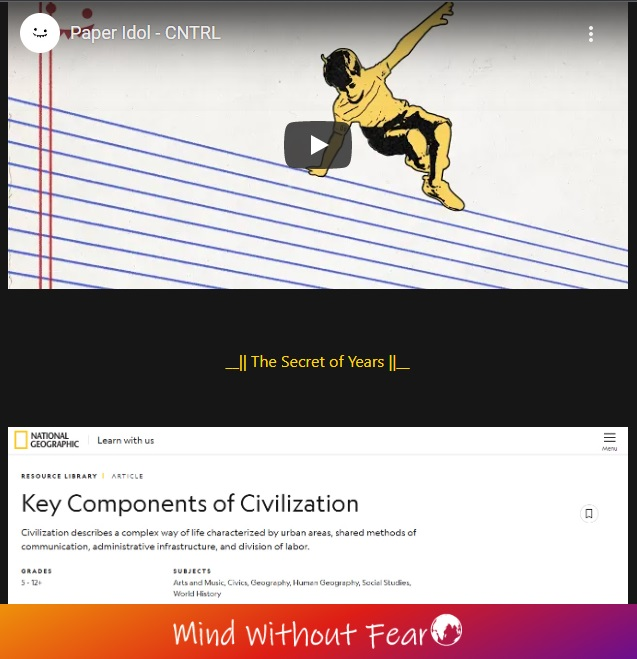
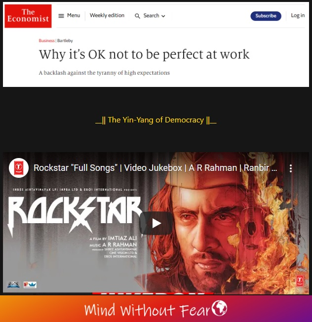
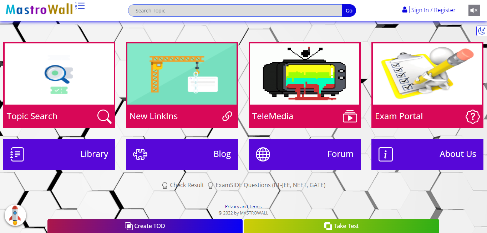
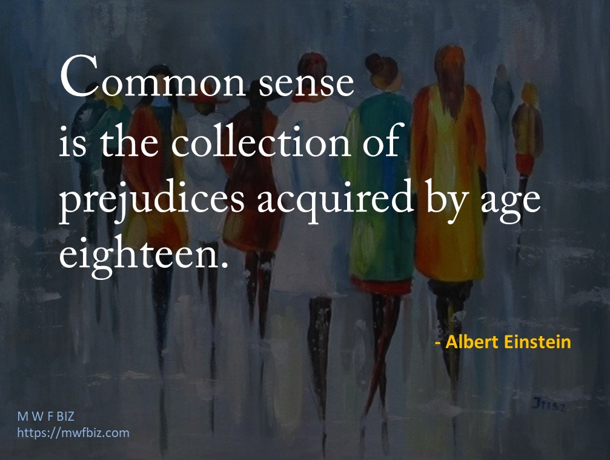
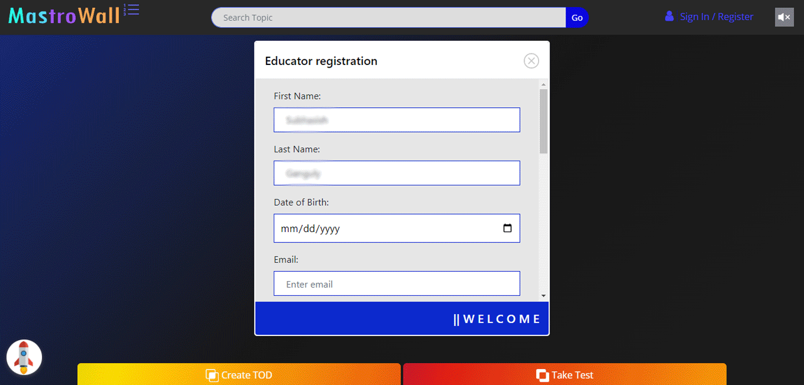
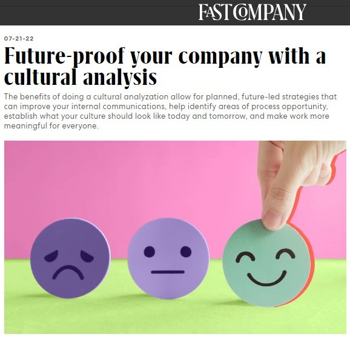
Future-proof your company with a cultural analysis
-- The benefits of doing a cultural analyzation allow for planned,
future-led strategies that can improve your internal
communications, help identify areas of process opportunity,
establish what your culture should look like today and tomorrow,
and make work more meaningful for everyone.
Your workplace culture sets up the expectations and understandings
of how your employees should think, act, and behave, and it is the
number one way to attract and retain talent. Not only that, good
workplace culture can help increase productivity and
profitability. Many companies have defined culture through their
values or a mission statement, but a true cultural statement
should speak to what your company actually does to support its
employees.
As we are in the era of the Great Realignment, right now is the
prime time to either define your company’s cultural statement or
redefine it based on the new status of our work world. Through a
good analysis of your workplace culture, you can help improve your
company in five key ways.
-- 1. UNDERSTAND YOUR LIVED-IN CULTURE VERSUS YOUR PERCEIVED
CULTURE
A cultural analyzation is a test of your current culture that
helps you identify areas of opportunity and weakness. In my
experience, there is often a disconnect between what leadership
thinks their company’s culture is versus what the employees’ view
of the culture actually is. If leadership is unaware of a problem
within their culture, they have no way to help rectify it.
According to the MIT Sloan Management Review, “a toxic corporate
culture… is 10.4 times more powerful than compensation in
predicting a company’s attrition rate compared with its industry.”
Understanding where your issues are can help you know what areas
need to improve for employees to have a more positive connection
to the culture today and plan for a better culture tomorrow.
-- 2. IMPROVE COMMUNICATION
One thing you can learn through the analysis process is how the
communications systems are working from department to department,
employee to employee, leadership to employee, and employee to
leadership and what can be improved. I have found that
communication—and within it, the language used—is the No. 1
indication of how culture is performing.
A study in 2009 by WTW found that “Effective internal
communications can keep employees engaged in the business and help
companies retain key talent, provide consistent value to
customers, and deliver superior financial performance to
shareholders.” When you find systems that are broken or language
being used that is counter to the culture you want to have, that
becomes an area for immediate action. Using this information can
help course-correct an entire culture when addressed properly.
-- 3. TURN INSIGHTS INTO ACTION
A challenge many leaders are facing right now is how to move past
the deluge of information, opinions, and new strategies. A
cultural analyzation can help you identify areas of weakness and
opportunities, and then give you a narrative of what your future
culture could be. The report can give you data to help back the
decisions and show what the ROI and value on investment will be.
Those future-led insights can then be brought back to the present
with short-, mid-, and long-term goals to achieve that future
cultural state. These become the metrics to monitor progress.
-- 4. FIND NEW AVENUES FOR PROCESS IMPROVEMENTS AND LEARNING
Understanding how employees want to be recognized, what processes
are in place that are considered a hindrance, and what skillsets
employees want to further their career are all part of a cultural
analyzation. The data from these components are used to create new
roles within the company, develop new training modules, and allow
for new and innovative ideas to flow.
Areas for upskilling and reskilling are often uncovered as part of
the work going into the analysis, and these are two key areas for
future workplace success. In my experience, most employees now
cite the office as being a place for collaboration and learning
versus standard routine work.
-- 5. CREATE A DEEPER LEVEL OF ENGAGEMENT
Culture is about your employees’ experiences and actions. What you
should want your culture to do is ultimately lead to happier
employees who feel supported and know what their company stands
for when it comes to how they are treated. Happier employees lead
to more engaged employees, which ultimately can help the bottom
line.
Companies that focus on improving their culture through a cultural
analyzation often find more meaningful ways to engage with their
employees, as the analysis process gives employees a voice to be
able to state what they feel about the company, its culture, and
their needs. It also can allow employees to voice what stagnant
processes could be innovated or replaced. This effort can also
help bring cross-collaboration between teams as they find common
goals they want to work on.
A cultural analyzation allows for planned, future-led strategies
that can improve your internal communications, help identify areas
of process opportunity, establish what your culture should look
like today and tomorrow, and make work more meaningful for
everyone. This analyzation can create alignment to help you make
more effective decisions for your future and give you actionable
steps to work toward, and even show you what to avoid. In the end,
it can help improve your employee experience, connection, and
retention.
https://www.fastcompany.com/90769080/future-proof-your-company-with-a-cultural-analysis
#company #culture #analysis #future #experience #action
#communication #engagement #learning 👨🏫
Sales
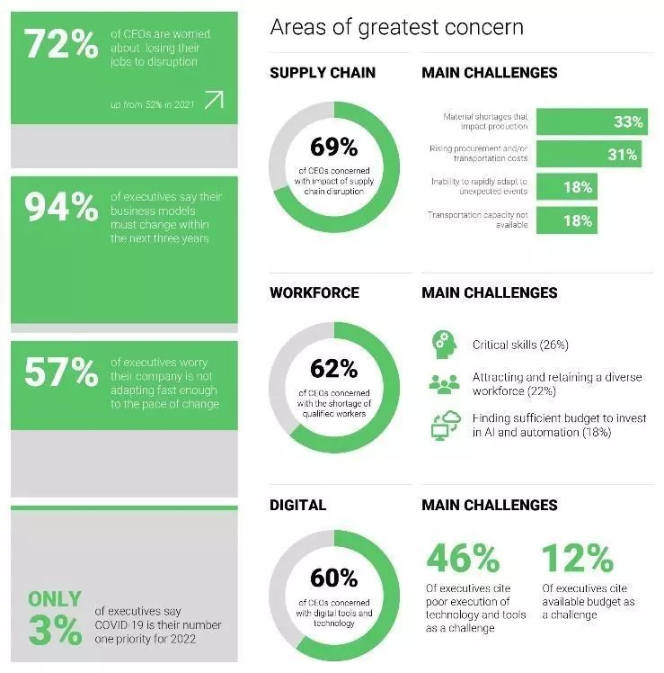
-- In an increasingly uncertain world, leaders have to learn how
to navigate simultaneous crises.
-- Excelling in turbulent times requires business leaders to
prioritize, work at pace and provide a clear and compelling
vision.
-- Leaders must be their own communications arm, delivering their
message endlessly and consistently to ensure it is heard.
In today’s world, one thing is certain: uncertainty, a status that
has emerged as the defining characteristic of our age.
For decades, much of the world enjoyed relatively steady economic
and social gains. As a global collective, we have experienced
better standards of living, improved transport and communication,
improved civil liberties for more of the world than before, and
improved life expectancies and public health. New technologies and
a movement toward freer trade brought a record number of people
into the global economy, creating expanded and robust economic
flows.
But today, much of this economic logic is being upended. First,
the pandemic and then the invasion of Ukraine presented the world
with the most significant set of challenges since World War II.
And now, in part on the back of these two crises but also driven
by longer-term trends, the world faces strong headwinds, which
will likely slow growth and create significant challenges for
leaders around the globe.
Bold new approaches to productivity, supply, consumption and
leisure are required – and are being adopted at surprising speed
as an array of other disruptive forces accelerate and become
increasingly apparent.
In this year’s AlixPartners Disruption Index, we identified four
major trends that we believe will be most transformative in the
years ahead.
𝗙𝘂𝘁𝘂𝗿𝗲 𝗱𝗶𝘀𝗿𝘂𝗽𝘁𝗼𝗿𝘀
1. 𝘋𝘦𝘮𝘰𝘨𝘳𝘢𝘱𝘩𝘪𝘤 𝘥𝘦𝘤𝘭𝘪𝘯𝘦 – An ageing and decreasing population will
impact all leading economies as labour force growth slows and, in
many cases, shrinks.
2. 𝘛𝘩𝘦 𝘢𝘤𝘤𝘦𝘭𝘦𝘳𝘢𝘵𝘪𝘰𝘯 𝘰𝘧 𝘯𝘦𝘸 𝘵𝘦𝘤𝘩𝘯𝘰𝘭𝘰𝘨𝘪𝘦𝘴 – Technological
advancement is both a boon and a bane, becoming the principal
driver of economic growth and improvements in quality of life
while also being a primary source of disruption and dislocation.
3. 𝘋𝘦𝘨𝘭𝘰𝘣𝘢𝘭𝘪𝘻𝘢𝘵𝘪𝘰𝘯 – Russia’s invasion of Ukraine is the latest
step toward a more fractured world, as forces of deglobalization
increase economic and geopolitical friction.
4. 𝘊𝘭𝘪𝘮𝘢𝘵𝘦 𝘤𝘩𝘢𝘯𝘨𝘦 – While the effects and urgency of global
warming are becoming increasingly apparent and accepted, the
transition to a clean energy future will likely take longer and
cost more than many suggest.
𝗡𝗮𝘃𝗶𝗴𝗮𝘁𝗶𝗻𝗴 𝗰𝗿𝗶𝘀𝗲𝘀
But what happens when the entire planet is disrupted overnight?
As we saw with the pandemic and now with the war in Ukraine,
predicting the next major global disruption is near impossible.
However, preparing for and guiding others through an environment
of uncertainty has become an essential leadership skill.
The best-performing companies disrupt and reinvent themselves on a
continual and ongoing basis. And this is also true of those who
lead them. Today’s leaders must have the courage to break away
from tried-and-true but rapidly fraying business models, even when
it feels hard.
𝗣𝗿𝗶𝗼𝗿𝗶𝘁𝗶𝘇𝗮𝘁𝗶𝗼𝗻 𝗶𝘀 𝗸𝗲𝘆
Prioritization means planning carefully and setting priorities
with limited resources and then maintaining focus, measuring
progress and ensuring accountabilities on these priorities. For
many companies, rapid growth and accommodative financing in recent
years have delayed many hard choices but a more difficult economic
and financial environment will accelerate the need to focus.
General Electric’s decision to split itself into three pieces last
year was a bold one. The decision was the natural endpoint of an
extensive transformation project led by CEO Larry Culp, which
included selling businesses, improving manufacturing processes and
cutting debt. General Electric (GE) had to be broken down before
it could be broken up. But the three-company solution was a clear
win for both customers and shareholders.
𝗣𝗮𝗰𝗲 𝗼𝘃𝗲𝗿 𝗽𝗲𝗿𝗳𝗲𝗰𝘁𝗶𝗼𝗻
It’s impossible to overestimate the importance of execution. That
is why it is important to take an action mindset – plan less and
do more.
The time you have to drive value in business is often less than
you anticipate and market volatility is currently at a high.
Interest rates and inflationary pressures are rising as the pace
of global growth slows. Ninety-four percent of executives believe
their business models must change within the next three years. In
order to make that transition, change has to begin today. The
worst possible decision is to do nothing.
𝗖𝗹𝗲𝗮𝗿 𝗮𝗻𝗱 𝗰𝗼𝗺𝗽𝗲𝗹𝗹𝗶𝗻𝗴 𝘃𝗶𝘀𝗶𝗼𝗻
A broad group of stakeholders demand values-led leadership, which
means being guided by a compass to do what is right rather than
what is expedient or minimally necessary.
You must be your own chief communications officer, communicating
clearly, regularly and consistently. Once leaders become tired of
delivering their message, that is usually when a critical mass of
stakeholders have heard it. Leadership, by definition, requires
followership. If you’re not bringing others along on your journey
– inspiring and guiding them – then any transformation is doomed
to failure.
In a volatile environment, clarity, control and speed are
essential. From our experience, leaders must lean into the forces
of change, taking required and swift action before they lose the
ability to set their own destiny. The macro-environment may not be
in anyone’s control but you can direct how you respond and the
rate at which you do so.
https://www.weforum.org/agenda/2022/06/the-roadmap-for-leaders-navigating-through-crises/
#business #leadership #crisis #navigator #success #prioritization
#performance #perfection #vision 🧑💼
Sales is the process of exchanging products or services for
money or other forms of value. It involves a series of
activities aimed at attracting potential customers, persuading
them to make a purchase, and ultimately delivering the product
or service. Effective sales strategies often include market
research, lead generation, customer relationship management, and
closing deals.
Online Media: Online media refers to the digital content distributed over
the internet. It encompasses a wide range of formats,
including articles, videos, audio, images, and interactive
content. Online media has revolutionized the way information
is disseminated and consumed, and it plays a crucial role in
various industries, including journalism, entertainment,
marketing, and education.
Information:
Information is data that has been processed and organized to
be meaningful and useful. It can be factual, descriptive, or
analytical and is often used to make informed decisions or
gain insights. Information can come in various forms,
including text, numbers, images, and more. In the digital age,
information is readily accessible, leading to a growing
emphasis on data management, analysis, and
dissemination.
Internet:
The internet is a global network of interconnected computers
and devices that allows for the exchange of data and
information. It enables communication, research,
entertainment, e-commerce, and countless other activities. The
internet has transformed the way we live and work,
facilitating connectivity and access to a vast amount of
resources and services.
Consumer:
A consumer is an individual or organization that purchases
goods or services to satisfy their needs or wants. Consumers
play a central role in the market economy, driving demand for
products and services. Understanding consumer behavior and
preferences is essential for businesses to develop effective
marketing and sales strategies.
Knowledge:
Knowledge represents the understanding and awareness acquired
through experience, education, and information. It encompasses
facts, skills, and insights that individuals or organizations
use to solve problems, make decisions, and innovate. Knowledge
is a valuable asset in various fields, including education,
science, technology, and business, as it empowers individuals
and entities to adapt and thrive in a dynamic world.
Sales Techniques:
Sales techniques refer to the methods and strategies used by
sales professionals to engage with potential customers, build
relationships, and close deals. Examples include consultative
selling, relationship selling, and solution-based selling.
Sales Funnel:
A sales funnel is a visual representation of the customer's
journey through the sales process, from awareness to purchase.
It helps businesses track and optimize the steps involved in
converting leads into customers.
Sales Forecasting: Sales forecasting involves
predicting future sales based on historical data, market
trends, and other relevant factors. Accurate forecasting is
crucial for inventory management, budgeting, and overall
business planning.
Sales CRM (Customer Relationship Management):
A Sales CRM is software that helps businesses manage customer
interactions, track leads, and improve sales processes. It is
essential for maintaining and nurturing customer
relationships.
Sales Metrics and KPIs (Key Performance Indicators):
These are specific measurements used to evaluate the
effectiveness of sales efforts. Common sales KPIs include
conversion rate, sales revenue, customer acquisition cost, and
customer lifetime value.
Inbound Sales vs. Outbound Sales:
Inbound sales involve responding to inquiries and leads
generated through marketing efforts, while outbound sales
involve proactive outreach to potential customers.
Understanding the differences and when to use each approach is
critical for a sales strategy.
Sales Territories:
Sales territories are geographic or demographic areas assigned
to sales teams or representatives. Effective territory
management is essential for optimizing coverage and sales
potential.
Sales Training and Development:
Sales professionals often undergo training to enhance their
skills, product knowledge, and sales techniques. Ongoing
training and development programs can improve sales
performance.
Sales Promotions:
Sales promotions are marketing tactics designed to stimulate
sales and attract customers. These can include discounts,
coupons, loyalty programs, and special offers.
Cross-Selling and Upselling:
Cross-selling involves offering additional products or
services to customers, while upselling encourages customers to
buy a more expensive version of what they're considering. Both
strategies can increase revenue and customer satisfaction.
Sales Negotiation:
Sales negotiation skills are crucial for reaching mutually
beneficial agreements with customers. Effective negotiation
can lead to better deals and stronger customer
relationships.
E-commerce Sales:
E-commerce sales involve the process of selling products or
services online. This field has seen significant growth, and
strategies for effective e-commerce sales are continually
evolving.
B2B Sales (Business-to-Business) vs. B2C Sales
(Business-to-Consumer):
Understanding the differences between B2B and B2C sales is
vital, as they involve distinct customer personas, buying
processes, and sales strategies.
Sales Automation and Technology:
Sales professionals often use various tools and technologies,
such as customer relationship management (CRM) software, email
marketing, and sales analytics, to streamline their processes
and increase efficiency.
Cold Calling and Prospecting:
Cold calling involves reaching out to potential customers who
have had no prior interaction with the company. Prospecting is
the process of identifying and qualifying potential leads.
Sales Presentation and Pitching:
Crafting a compelling sales presentation or pitch is essential
for effectively communicating the value of a product or
service to potential customers.
Sales Scripts and Sales Messaging:
Developing persuasive scripts and messaging for sales
representatives can ensure consistency and clarity in customer
interactions.
Objection Handling:
Sales professionals need to be skilled in addressing and
overcoming objections or concerns that potential customers may
have.
Closing Techniques:
Closing is the final step in the sales process, and there are
various techniques and strategies to prompt the customer to
make a purchase decision.
Sales Compensation and Incentives: Designing sales compensation plans and incentives to motivate
and reward sales teams is critical for achieving sales
targets.
Sales Territory Management:
Effectively managing sales territories involves optimizing the
allocation of resources and ensuring comprehensive coverage of
potential markets.
Referral Sales:
Encouraging satisfied customers to refer others is a powerful
sales strategy. Building a referral program can lead to new
leads and customers.
Channel Sales:
Channel sales involve selling through intermediaries, such as
distributors, resellers, or agents. Managing these
partnerships and distribution networks is essential.
Sales Ethics and Compliance:
Sales professionals must adhere to ethical standards and legal
regulations in their sales practices to maintain trust and
reputation.
Social Selling:
Leveraging social media platforms and networks to connect with
potential customers and build relationships is a modern
approach to sales.
Sales Psychology:
Understanding the psychology of buying and decision-making can
help sales professionals tailor their approaches to customer
preferences.
Sales Reporting and Analytics:
Utilizing data and analytics to track and analyze sales
performance, customer behavior, and market trends is crucial
for making informed decisions.
Sales Enablement:
Sales enablement involves providing sales teams with the
tools, resources, and training they need to be successful,
such as sales collateral and content.
Sales Networking:
Building a professional network and establishing relationships
with key industry players can be valuable for generating leads
and partnerships.
These topics provide a more comprehensive overview of the
complex and multifaceted field of sales, covering various
aspects from techniques and technology to customer
relationships and strategies.
Operation
Financial Advisor Vs. Financial Planner: What’s The
Difference?
Although the terms financial advisor and financial planner are
often used interchangeably, there are distinct differences
between these two types of professionals.
If you’re deciding between a financial advisor vs. a financial
planner, here’s what you should know.
-- What Is a Financial Advisor?
A financial advisor has passed licensure and certification exams
needed to provide guidance on investments and financial matters.
Financial advisors can help clients with a variety of monetary
decisions, including saving for retirement, buying a home or
investing in a business. They can also arrange insurance
coverage for clients and help strategize on estate
planning—though you’ll still want an attorney to draft any wills
or trusts.
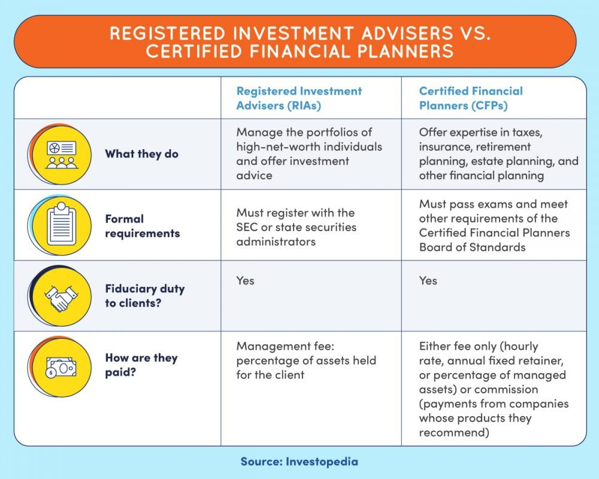
There are many different types of advisors, each offering their own set of strategies and services—as well as their own specialty. Most have passed certain licensing exams. This is typically the Financial Industry Regulatory Authority (FINRA) Series 7 Exam or potentially the Series 65 Exam (required for registered investment advisors). Some financial advisors are also financial planners, though not all achieve this designation.
Financial advisors typically charge an annual fee for their services. Some also charge commissions on the products they sell, such as mutual funds and annuities. These fees can vary greatly, though annual fees often range from 0.5% to 1% of assets under management (AUM) with commissions as high as 6% of transaction amounts.
-- What Is a Financial Planner?
A financial planner is a special type of financial professional who leverages advanced knowledge and tools to create personalized financial plans for clients. These encompass everything from saving for retirement to arranging for late-life planning to strategizing on asset transfers.
Many financial advisory firms have one or more certified financial planners (CFPs) on staff to work with clients or advisors to prepare comprehensive plans for clients. These can then be used in conjunction with other tools and strategies to execute transactions and manage client finances.
Like financial advisors, financial planners often charge fees for their services. Depending on the specific services being provided, these fees may be monthly, quarterly, annual or project-based.
Some planners also earn commissions on the products they sell. Commissions are usually the same as for financial advisors, and hourly fees can range from $50 to $150 per hour (or at least $1,000 on a project basis).
-- Differences between Financial Advisor vs Financial Planner
While both financial advisors and financial planners work with clients and provide helpful advice, there are some key differences between the two. For example, while many financial advisors assist clients over a long period of time, some only help clients with specific transactions or investments.
Financial planners, on the other hand, tend to take a more holistic approach to client finances and develop long-term plans that address all aspects of a client’s financial life. These are usually revisited every few years, with client investments or strategies adjusted as plans are updated.
Another key difference is that financial advisors may earn commissions on some of the products they sell, while financial planners more commonly charge hourly or flat fees for their services.
Lastly, while financial advisors and planners often have many of the same licenses, they typically have different certifications—including the CFP designation.
-- When to Get a Financial Planner vs. an Advisor?
If you’re looking for help with your finances, both a financial advisor and a planner may be able to help you. The better option depends largely on your circumstances.
For example, if you have short-term issues or need assistance with specific questions or investments, a financial advisor can usually be a big help. However, if you want support for developing a comprehensive long-term plan for your finances, you may be better off working with a financial planner.
A financial planner might be the best fit if you:
- Want help developing a long-term financial plan
- Want to gain a comprehensive understanding of how your finances are likely to evolve over the course of your life
- Are going through a major life change, such as getting married or having a baby
- Are nearing retirement and want to make sure you have enough saved
- Need help managing debt, saving for college or creating a budget
- Want to start strategizing about key asset transfers to heirs and other beneficiaries
Alternatively, a financial advisor may be more appropriate if you:
- Are looking for help with a specific investment strategy or decision
- Don’t feel confident making financial decisions on your own
- Have a comfortable financial situation and are simply looking for someone to provide occasional guidance
- Already have a comprehensive financial planner and need someone else to help you use investments and other tools to execute your plan
-- How to Find a Financial Planner or Financial Advisor
If you’re interested in working with a financial planner or advisor, there are a few things to keep in mind. Follow these tips when choosing a financial advisor or planner to assist with your finances:
- Pick someone who is licensed. Before you decide who to work with, check them out using FINRA’s BrokerCheck tool or the Investment Advisor Public Disclosure database on the Security and Exchange Commission (SEC) website.
- Check the professional’s certifications. You can search for CFPs on the Certified Financial Planner Board of Standards website.
Make sure they’re a good fit for your specific needs. Ask about their experience, investment philosophy and fees. Be sure to check references and read reviews before hiring someone.
- Understand the relationship. Make sure you are clear on what services the financial planner or advisor will provide and how they will be compensated.
- Know their limitations. Ask questions to ensure you understand the advisor or planner’s approach to managing money. Are there any strategies they can’t help with or products they aren’t able to offer?
https://www.forbes.com/advisor/investing/financial-advisor/financial-advisor-vs-financial-planner/ #Finance #financialadvisor #financialplanning #business #growth #Consumer 👨💻
Step by step software development: 7 phases to build a
product
Software creation is complicated. Usually, it consists of a
certain number of phases. Let’s see what steps of development
are responsible for, how it works, and what results they give
with a guide to step-by-step software development.
How to build a software product most successfully? For one
thing, it is crucial to conduct a business analysis.
Professional analysts can precisely define your needs and
recommend a solution that will bring value to all company
stakeholders.
7 core phases of software development
How to develop software most properly? In what order to go? Here
are seven main software development steps in the project life
cycle that should be followed by your development team.
𝗣𝗵𝗮𝘀𝗲 𝟭 – 𝗕𝗿𝗮𝗶𝗻𝘀𝘁𝗼𝗿𝗺𝗶𝗻𝗴
Coming up with innovative ideas is often challenging because
recent years have already brought us so many brand-new IT
products and technological innovations. Because of a bunch of
out-of-the-box solutions, product and project managers together
with developers have to think globally to create a software
application demanded in the market and, generally, offer
something different.
𝗣𝗵𝗮𝘀𝗲 𝟮 – 𝗕𝘂𝘀𝗶𝗻𝗲𝘀𝘀 𝗮𝗻𝗮𝗹𝘆𝘀𝗶𝘀
Before investing heavily in the project, the CEO and all team
members have to carry out a feasibility analysis. The
feasibility study can show how to make your own software
profitable in the long run and evaluates all factors including
economic and technical that affect the project development.
Every member of the team, testers, developers, PMs, and others,
must provide a clear estimate of the time they need to complete
the specific tasks, efforts, and resources they need to involve.
It will help calculate all expenses.
𝗣𝗵𝗮𝘀𝗲 𝟯 – 𝗗𝗲𝘀𝗶𝗴𝗻
Conceptualizing the product is made during the design stage of
SDLC. Design is developed according to the specifications
written during the first two stages of software development.
Designers, like any other architects, build the whole structure
of the project and provide the final prototype that will be used
for the next steps of software development.
𝗣𝗵𝗮𝘀𝗲 𝟰 – 𝗣𝗿𝗼𝗴𝗿𝗮𝗺𝗺𝗶𝗻𝗴
Here is coding where developers are getting started. Every
programmer has his own software development tasks list for
coding for which he is responsible. The software build process
is controlled by project managers. This phase is the most
time-consuming operation.
𝗣𝗵𝗮𝘀𝗲 𝟱 – 𝗜𝗻𝘁𝗲𝗴𝗿𝗮𝘁𝗶𝗼𝗻
Integrating all sources and environments is a must in figuring
out how to create a software program efficiently as it helps to
figure out on time how many issues, conflicts, and bugs are
there. Most teams, especially agile ones, use continuous
integration. Such teams execute unit tests and use automated
compilation and tests.
𝗣𝗵𝗮𝘀𝗲 𝟲 – 𝗤𝘂𝗮𝗹𝗶𝘁𝘆 𝗮𝘀𝘀𝘂𝗿𝗮𝗻𝗰𝗲
QA engineers test the quality of the code written by developers.
They use different frameworks and kinds of testing to learn if
there are any bugs in the system. Testers write test cases and
report the bugs to developers to fix them, also helping to
figure out how to build a software product most efficiently.
𝗣𝗵𝗮𝘀𝗲 𝟳 – 𝗥𝗲𝗹𝗲𝗮𝘀𝗲
The first software release will be followed by the releases of
the next versions of the product. It is the final stage of
development that can be also followed by maintenance and
support.
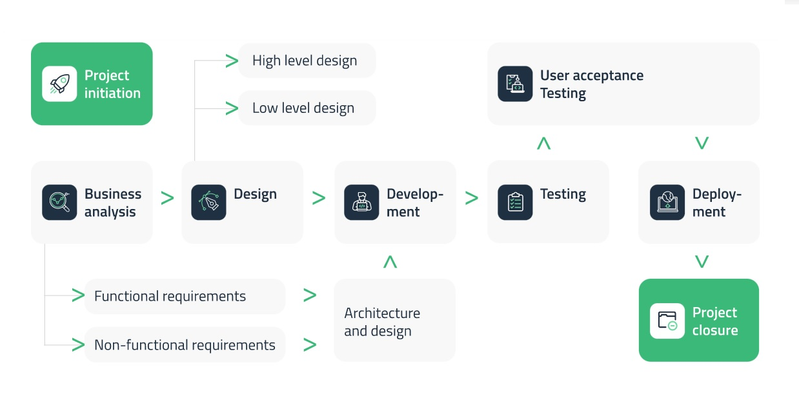
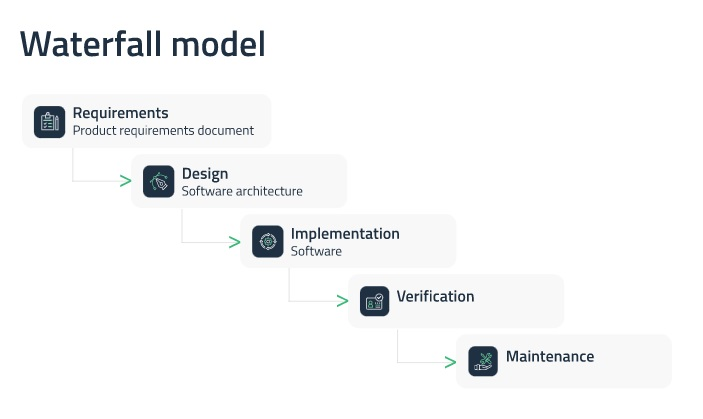
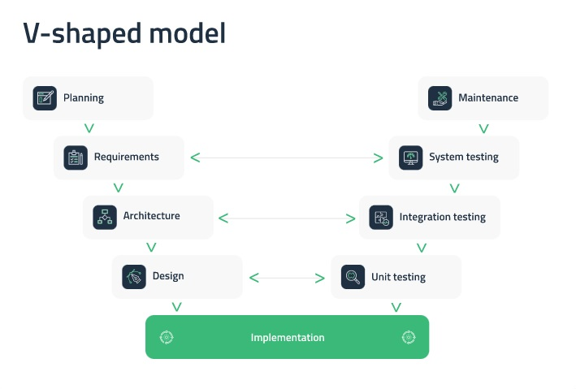
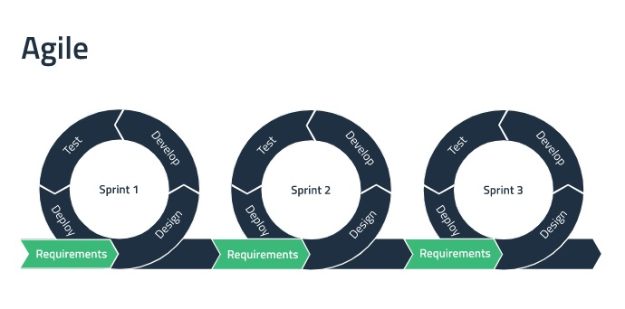
In 2022, the average employee experienced 10 planned enterprise changes — such as a restructure to achieve efficiencies, a culture transformation to unlock new ways of working, or the replacement of a legacy tech system — up from two in 2016. While more change is coming, the workforce has hit a wall: A Gartner survey revealed that employees’ willingness to support enterprise change collapsed to just 43% in 2022, compared to 74% in 2016. Navigating the pandemic asked a lot of employees — and while they delivered, it came at a cost. Relentless sprinting means many employees are running on fumes. To create more sustainable change efforts, leaders must prioritize change initiatives, showing employees where to invest their energies. They also must manage change fatigue by building in periods of proactive rest, involving employees in change plans, and challenging managers to help build team resilience.
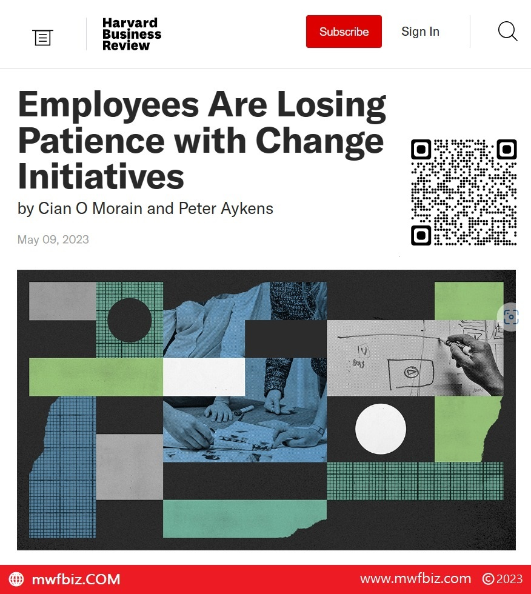
Know More: https://hbr.org/2023/05/employees-are-losing-patience-with-change-initiatives 👨👩💼
Services/ Tech
Powering AMRIT Corp, a tech-driven solutions company committed to innovation across digital infrastructure, AI, data platforms, custom software, and web application development.
About AMRIT
AMRIT Corp specializes in scalable digital systems, enterprise tools, and custom applications tailored to clients' needs across sectors like education, logistics, analytics, and consumer technology. The company focuses on modern engineering practices, user-centered design, and reliable backend architecture.
Technology Stack
- Frontend: HTML5, CSS3, JavaScript, Angular, React (where applicable)
- Backend: Node.js, Python (Flask), PHP ( Core PHP)
- Full Stack Development: Integration of REST APIs, secure authentication, dashboard systems, real-time services, and cloud deployments
- Database: MySQL, MongoDB
- DevOps & Deployment: GitHub Actions
What We Deliver
From idea to deployment, AMRIT Corp delivers full-cycle application including:
- Custom Web & Mobile Applications
- API-first backend services
- Interactive frontends with responsive UI/UX
- AI-based tools and automation systems
- Secure authentication and user management
- Analytics dashboards and reporting systems
For product inquiries or collaboration, visit https://amrit-corp.com